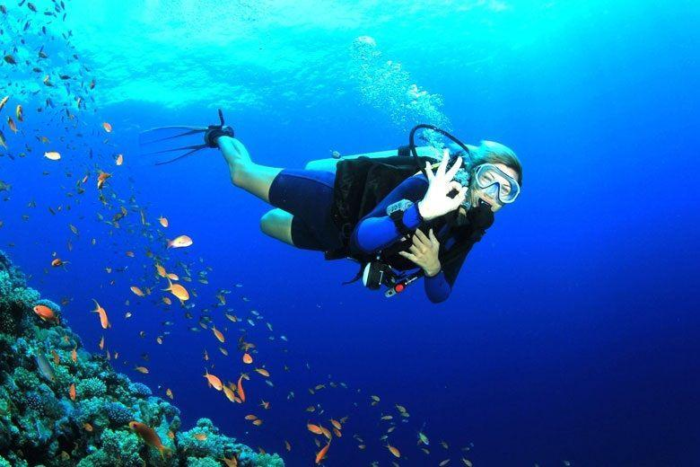
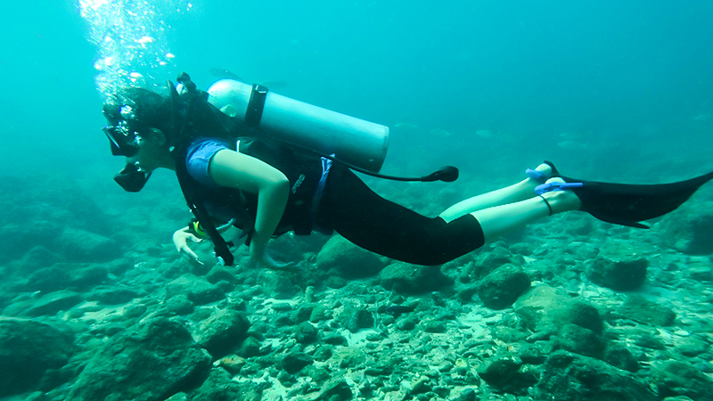
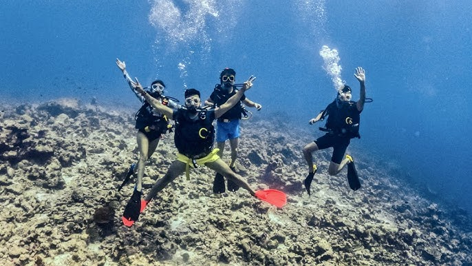

1. Havelock Island, Andaman
Brief: Havelock Island, part of the Andaman and Nicobar Islands, is renowned for its pristine beaches, crystal-clear waters, and vibrant marine life. The island offers some of the best scuba diving experiences in India, with diverse underwater ecosystems including coral reefs, turtles, and schools of fish. With a range of dive sites suitable for beginners to advanced divers, it’s a must-visit destination for ocean enthusiasts.
Best Time To Visit: October to May
Budget: ₹4,000–₹6,000 per dive
2. Netrani Island, Karnataka
Brief: Netrani Island, also known as Pigeon Island, is a hidden gem off the coast of Karnataka, offering some of the clearest waters for scuba diving in India. The island is home to diverse marine life, including colorful coral reefs, barracudas, and parrotfish. It is an excellent spot for both beginners and experienced divers, with visibility reaching up to 30 meters. The calm waters and abundant underwater life make Netrani a perfect diving destination.
Best Time To Visit: October to February
Budget: ₹3,500–₹5,500 per dive
3. Grand Island, Goa
Brief: Grand Island in Goa is a popular destination for both novice and seasoned scuba divers. Known for its shallow waters, Grand Island offers an array of marine life, including tropical fish, sea turtles, and coral formations. Divers can explore shipwrecks from the colonial era, adding an extra thrill to the underwater experience. The warm waters, coupled with beautiful marine biodiversity, make it a favorite for diving in India.

Best Time To Visit: October to April
Budget: ₹3,000–₹4,500 per dive
4. Bangaram Island, Lakshadweep
Brief: Bangaram Island, part of the Lakshadweep archipelago, offers a serene and pristine diving experience with its clear waters and stunning coral reefs. The island is surrounded by rich marine biodiversity, including manta rays, sea turtles, and various species of fish. The secluded environment makes it an ideal location for a peaceful dive in crystal-clear waters. It is one of the most exclusive scuba diving destinations in India, attracting divers seeking an unspoiled underwater paradise.
Best Time To Visit: November to March
Budget: ₹6,000–₹8,000 per dive